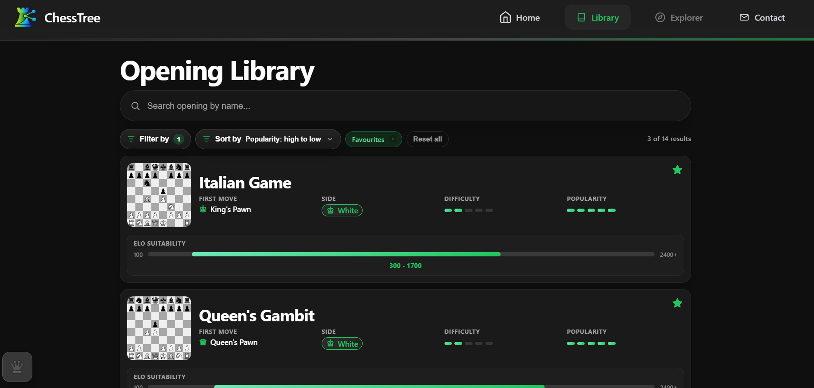
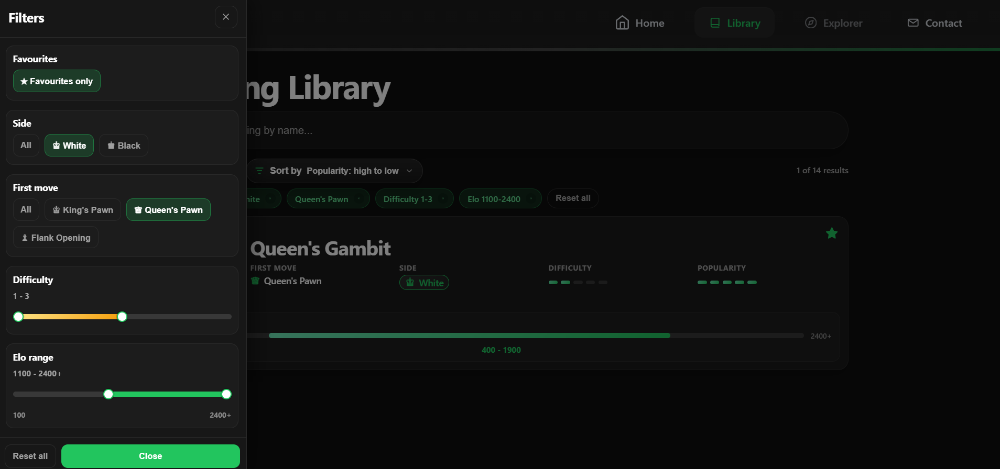

Library
Сторінка Library
Library — це головна сторінка каталогу дебютів у ChessTree. Тут користувач переглядає картки, шукає дебюти, застосовує фільтри та переходить до окремого дебюту.
Загальний огляд системи: Overview.
Що відображається на сторінці
- поле пошуку Search opening by name...;
- кнопка Filter by;
- блок Sort by;
- лічильник результатів.
Картка дебюту містить: назву, міні-дошку, First move, Side, Difficulty, Popularity, Elo suitability, кнопку Favourites.

Як працюють фільтри
Колір (Side)
Доступно: White, Black, All.
Перший хід (First move)
Категорії: King's Pawn, Queen's Pawn, Flank Opening, Irregular, All.
Складність (Difficulty)
Діапазон 1-5 (мінімум/максимум).
Діапазон Elo (Elo range)
Межі від 100 до 2400+ з кроком 100.
Сортування (Sort by)
Список дебютів можна відсортувати за популярністю, складністю або Elo, залежно від обраного режиму Sort by.

Пошук і взаємодія
Пошук у Library працює за назвою дебюту в реальному часі. Кнопка очищення повертає повний список.
- натисни картку, щоб перейти до дебюту;
- натисни зірочку, щоб додати/прибрати Favourites;
- користуйся Favourites only;
- скидай фільтри через Reset all.
Терміни інтерфейсу: Glossary.